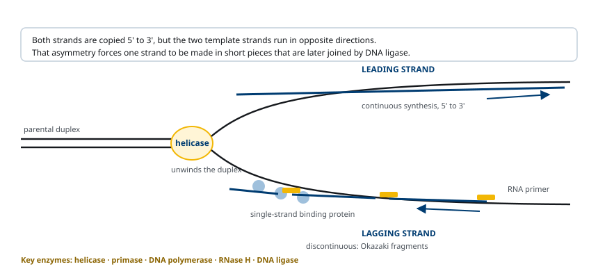
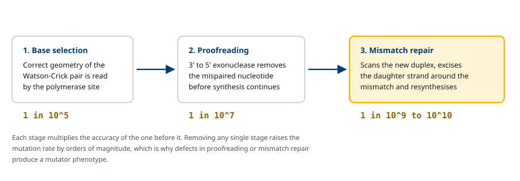
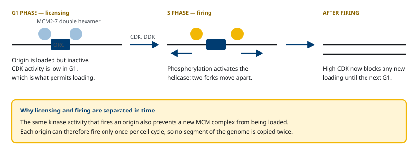
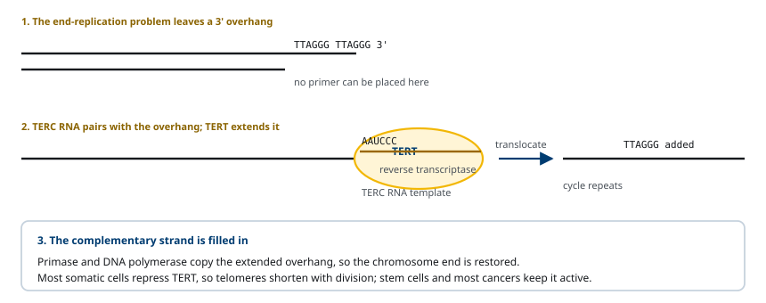
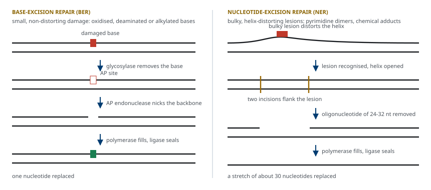
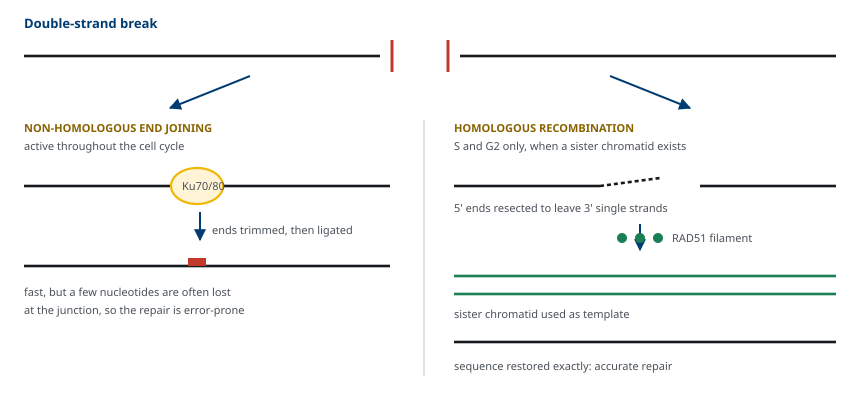
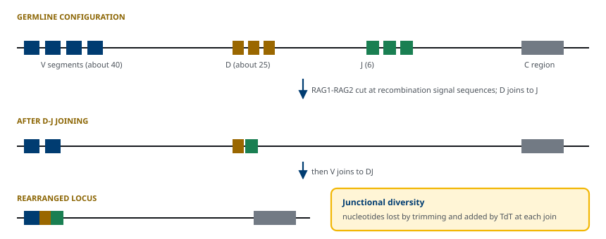

M01-W06-L03 · 인체일반생물학과 기초세포생물학
DNA 복제·복구와 유전체 재배열
Replication, Maintenance and Rearrangement of Genomic DNA
학습목표
- DNA polymerase의 공통 성질 세 가지를 들고 그 성질이 복제 분기점의 구조를 어떻게 제약하는지 설명한다.
- 복제 분기점에 모이는 단백질을 기능별로 나열하고 leading 가닥과 lagging 가닥의 합성 과정을 단계로 서술한다.
- 복제 정확도를 만드는 세 단계를 구분하고 각 단계가 오류율을 얼마나 낮추는지 수치로 제시한다.
- 복제 원점의 개시 조절이 세포주기당 한 번의 복제를 보장하는 기전을 licensing 개념으로 설명한다.
- Telomerase의 작용을 주형과 산물로 설명하고 telomere 단축이 분열 횟수를 제한하는 과정을 서술한다.
- DNA 손상 복구 경로를 직접 복구, base-excision repair, nucleotide-excision repair, mismatch repair로 구분하고 각 경로가 처리하는 손상을 든다.
- Double-strand break의 두 복구 경로를 비교하고 어느 경로가 서열 정보를 보존하는지 판단한다.
- 면역글로불린 유전자의 프로그램된 재배열과 유전자 증폭이 유전체 변화를 만드는 과정을 설명한다.
선수지식
- M01-W06-L02 유전자와 유전체의 구성 — telomere와 centromere의 서열 구조, nucleosome과 chromatin의 응축
- M01-W06-L01 재조합 DNA와 분자생물학 실험 기법 — 서열 분석, hybridization, PCR
- M01-W05-L02 생체분자와 막의 구조 — DNA 이중나선, 염기쌍, 5′→3′ 방향성
강의 구성
- 1. 반보존적 복제와 DNA polymerase의 공통 성질
- 2. 복제 분기점의 구조와 두 가닥의 합성
- 3. 복제의 정확도: 염기 선택, proofreading, mismatch repair
- 4. 복제 원점과 개시 조절
- 5. Telomere와 telomerase
- 6. DNA 손상과 복구: 직접 복구와 excision repair
- 7. 손상을 건너뛰는 합성과 double-strand break의 복구
- 8. 프로그램된 유전체 재배열과 유전자 증폭
1. 반보존적 복제와 DNA polymerase의 공통 성질
Watson과 Crick의 이중나선 모형은 복제 방식을 곧바로 제안했다. 두 가닥이 상보적이므로 각 가닥이 주형이 되어 상대 가닥을 다시 만들 수 있다. 이 예측은 1958년 Meselson과 Stahl의 실험으로 확인되었다. 15N 배지에서 키운 *E. coli*를 14N 배지로 옮기고 세대마다 DNA를 CsCl 밀도구배 원심분리로 분리했더니, 한 세대 뒤에는 무거운 띠와 가벼운 띠의 중간 밀도 띠 하나만, 두 세대 뒤에는 중간 띠와 가벼운 띠가 1:1로 나타났다. 완전히 새 분자와 완전히 옛 분자로 갈라지는 보존적 복제라면 한 세대 뒤에 무거운 띠와 가벼운 띠가 함께 나왔어야 한다. 관찰된 결과는 각 분자가 옛 가닥 하나와 새 가닥 하나로 이루어진다는 반보존적 복제(semiconservative replication)와만 일치한다.
복제를 수행하는 효소는 1956년 Kornberg가 E. coli 추출물에서 분리한 DNA polymerase다. 이후 발견된 모든 DNA polymerase는 세 가지 성질을 공유한다.
- 합성 방향이 5′→3′ 한 방향이다. 새 뉴클레오타이드의 5′ 삼인산이 신생 가닥 3′ 말단의 hydroxyl기와 결합하며, 이때 pyrophosphate가 떨어져 나오는 가수분해가 반응을 끌어간다.
- 스스로 합성을 시작할 수 없다. 3′ 말단을 가진 primer가 이미 주형에 붙어 있어야 그 뒤를 이어 붙인다. 뉴클레오타이드 두 개를 처음부터 잇는 활성이 없다.
- 주형 의존적이다. 들어갈 염기는 주형 염기와의 상보성으로 선택된다.
이 세 성질이 복제 기구의 복잡성을 모두 설명한다. Primer가 필요하므로 primase가 있어야 하고, 한 방향으로만 합성되므로 반대 방향으로 열리는 가닥은 토막으로 나누어 만들어야 한다.
진핵세포는 역할이 다른 polymerase를 여럿 갖는다. Pol α는 primase와 복합체를 이루어 RNA primer에 짧은 DNA를 이어 붙여 합성을 개시하고, Pol ε는 leading 가닥, Pol δ는 lagging 가닥의 대부분을 합성한다. Pol γ는 미토콘드리아 DNA를 복제하며, Pol β는 복구, Pol η·ι·κ·ζ는 손상 부위를 건너뛰는 합성에 쓰인다. *E. coli*에서는 Pol III holoenzyme이 복제를 담당하고 Pol I은 primer 제거와 그 틈을 메우는 일을 한다.
2. 복제 분기점의 구조와 두 가닥의 합성
복제는 이중나선이 풀리는 복제 분기점(replication fork)에서 일어난다. 두 주형 가닥은 방향이 반대이므로 분기점이 한 방향으로 전진할 때 한 가닥은 분기점이 가는 방향과 같은 방향으로 합성되고, 다른 가닥은 반대 방향으로 합성되어야 한다. 앞의 것이 leading 가닥으로 끊김 없이 이어지고, 뒤의 것이 lagging 가닥으로 짧은 토막을 반복해 만든 뒤 이어 붙인다.
이 토막은 1968년 Okazaki 등이 확인했다. *E. coli*에 방사성 thymidine을 아주 짧게 공급하고 DNA를 변성시켜 크기별로 분리하면, 표지가 먼저 짧은 조각(세균에서 1,000~2,000 뉴클레오타이드)에 들어가고 시간이 지나면서 긴 사슬로 옮겨 갔다. 이 조각이 Okazaki 토막이고 진핵세포에서는 100~200 뉴클레오타이드로 더 짧다. 진핵세포의 토막이 짧은 이유는 nucleosome 반복 주기와 대응하는 것으로 본다.
분기점에는 다음 단백질이 모인다.
| 단백질 | 기능 | 포유류 | E. coli |
|---|---|---|---|
| Helicase | 이중나선을 풀어 분기점을 전진시킨다 | MCM2–7 (CMG 복합체) | DnaB |
| 단일가닥 DNA 결합 단백질 | 풀린 주형이 다시 짝짓거나 분해되지 않게 한다 | RPA | SSB |
| Primase | RNA primer를 합성한다 | Pol α–primase | DnaG |
| Sliding clamp | polymerase를 주형에 붙잡아 지속성을 높인다 | PCNA | β clamp |
| Clamp loader | clamp를 primer 위에 끼운다 | RFC | γ 복합체 |
| Topoisomerase | 분기점 앞에 쌓이는 꼬임을 풀어 준다 | Topo I, Topo II | Topo I, gyrase |
| Nuclease·DNA ligase | primer를 제거하고 토막을 이어 붙인다 | FEN1, Pol δ, Ligase I | RNase H, Pol I, Ligase |

Lagging 가닥의 합성은 다음 순서로 진행된다. Primase가 풀린 주형에 10 뉴클레오타이드 내외의 RNA primer를 놓는다. Clamp loader가 그 3′ 말단에 clamp를 끼우고 polymerase가 들어와 앞선 토막에 닿을 때까지 DNA를 합성한다. 다음으로 앞선 토막의 5′ 쪽 RNA primer가 제거된다. 진핵세포에서는 Pol δ가 primer를 밀어내 flap을 만들고 FEN1이 이를 잘라내며, *E. coli*에서는 RNase H와 Pol I의 5′→3′ exonuclease 활성이 같은 일을 한다. 생긴 틈을 DNA로 메운 뒤 DNA ligase가 인산이에스터 결합을 만들어 토막을 잇는다.
두 가닥은 따로 떨어져 합성되지 않는다. Lagging 가닥 주형이 고리로 휘어 들어가면 두 polymerase가 하나의 복합체로 묶여 같은 속도로 전진할 수 있다. 분기점의 전진 속도는 *E. coli*에서 초당 약 1,000 뉴클레오타이드, 포유류 세포에서 초당 약 50 뉴클레오타이드다. 포유류가 느린데도 훨씬 큰 유전체를 몇 시간 안에 복제하는 것은 원점을 많이 쓰기 때문이다.
3. 복제의 정확도: 염기 선택, proofreading, mismatch repair
사람 유전체는 복제 한 번에 약 6×109 염기쌍을 합성한다. 분열마다 유전자에 변이가 쌓이지 않으려면 오류율이 극히 낮아야 한다. 측정된 전체 오류율은 염기 109~1010개당 1개 수준이다. 이 값은 한 단계로 얻어지지 않고 세 단계가 곱해져 나온다.
- 염기 선택 polymerase의 활성 부위는 올바른 염기쌍의 기하 구조에만 맞는다. 잘못된 염기가 들어오면 다음 뉴클레오타이드를 붙이는 반응이 느려진다. 이 단계만으로 오류율은 약 10-5이다.
- Proofreading 대부분의 복제용 polymerase는 3′→5′ exonuclease 활성을 함께 가진다. 짝이 맞지 않은 3′ 말단은 활성 부위에서 흔들리므로 합성이 멈추고, exonuclease 활성이 그 뉴클레오타이드를 떼어낸다. 이 단계가 오류율을 약 100배 낮춰 10-7로 만든다.
- Mismatch repair 복제가 지나간 뒤 남은 짝맞춤 오류를 찾아 신생 가닥 쪽을 잘라내고 다시 합성한다. 추가로 100~1,000배를 낮춘다.

Mismatch repair에서 핵심 문제는 짝이 맞지 않는 두 염기 중 어느 쪽이 잘못되었는지를 아는 것이다. 주형 가닥 쪽을 고치면 변이가 그대로 고정된다. 세포는 신생 가닥을 따로 표시한다. *E. coli*는 GATC 서열의 adenine이 Dam methylase로 메틸화되는 데 시간이 걸리므로, 복제 직후 신생 가닥만 메틸화되지 않은 상태다. MutS가 짝맞춤 오류를 인식하고 MutL과 MutH가 메틸화되지 않은 가닥을 끊어 그 구간을 제거한다. 진핵세포에는 이 메틸화 표시가 없고, MSH2–MSH6가 오류를 인식한 뒤 신생 가닥에 남아 있는 틈과 PCNA의 방향성을 단서로 신생 가닥을 구별한다.
4. 복제 원점과 개시 조절
복제는 아무 곳에서나 시작하지 않는다. 복제 원점(origin of replication)은 개시 단백질이 결합하는 서열이다. *E. coli*의 *oriC*는 약 245 bp이며 DnaA가 결합하는 9 bp 반복과 가닥이 풀리기 쉬운 AT 많은 13 bp 반복을 포함한다. DnaA가 결합해 나선을 국소적으로 풀면 helicase가 들어오고 양방향으로 두 개의 분기점이 만들어진다. 4.6 Mb 유전체에 원점이 하나뿐이므로 두 분기점이 반대편에서 만날 때까지 복제가 진행된다.
진핵세포는 원점을 많이 쓴다. *S. cerevisiae*의 원점은 autonomously replicating sequence(ARS)로, 약 100 bp 길이이며 11 bp 공통 서열을 가진다. 이 서열을 플라스미드에 넣으면 효모 안에서 복제되므로 기능으로 정의된다. ARS에 결합하는 단백질 복합체가 origin recognition complex(ORC)다. 사람 세포의 원점은 서열 공통성이 약해서 서열만으로 예측되지 않으며, chromatin 구조와 전사 상태가 원점 위치를 정하는 데 관여한다. 사람 세포는 분열마다 수만 개 원점을 쓰고, 원점 하나가 담당하는 구간(replicon)은 수십에서 수백 kb다. 원점이 동시에 모두 열리지 않고 S기 동안 순서대로 열리므로 유전체 전체가 S기 안에 복제된다.

원점이 세포주기당 두 번 열리면 그 구간만 copy 수가 늘어나 유전체가 불균형해진다. 이를 막는 장치가 licensing이다. G1기에 Cdc6과 Cdt1이 ORC 위로 MCM2–7 helicase를 올려놓는다. 이 상태가 사용 허가다. S기에 들어가 CDK와 DDK가 활성화되면 MCM2–7이 CDC45와 GINS를 받아 활성 helicase(CMG)가 되고 분기점이 출발한다. 동시에 Cdt1은 분해되거나 geminin에 묶이고 Cdc6은 인산화되어 핵에서 빠져나간다. 따라서 이미 출발한 원점에는 새 MCM이 올라가지 못하고, 다음 허가는 다음 세포주기의 G1기에야 가능하다. 허가 단계와 개시 단계를 세포주기의 서로 다른 시점에 배치한 것이 한 번의 복제를 보장하는 기전이다.
5. Telomere와 telomerase
선형 염색체의 말단에는 polymerase의 두 가지 제약이 그대로 문제로 드러난다. Lagging 가닥 주형의 맨 끝에서 마지막 RNA primer가 제거되면 그 자리를 메울 3′ 말단이 없다. 그 결과 복제마다 말단이 짧아진다. 사람의 체세포에서 측정된 단축은 분열마다 50~100 bp다.
사람의 telomere는 TTAGGG 6염기 반복이 수 kb에서 15 kb 이어지고 3′ 쪽이 단일가닥으로 돌출되어 있다. 이 반복을 다시 늘리는 효소가 telomerase다. Telomerase는 단백질 subunit TERT와 RNA subunit TERC로 이루어지며, 자기 주형을 가지고 다니는 reverse transcriptase다. TERC의 일부 서열이 telomere 반복과 상보적이어서 돌출된 3′ 말단에 짝지으면, TERT가 이 RNA를 주형으로 DNA를 이어 붙인다. 한 단위를 늘린 뒤 효소가 미끄러져 다시 짝짓고 같은 과정을 반복한다. 늘어난 단일가닥은 primase와 polymerase가 상대 가닥을 채워 이중나선이 된다. Telomerase 활성은 Greider와 Blackburn이 Tetrahymena 추출물에서 처음 검출했다.

사람에서 telomerase는 생식세포와 줄기세포에서 활성이 높고, 대부분의 체세포에서는 낮다. 그래서 배양한 정상 섬유아세포는 일정 횟수를 분열한 뒤 더 나뉘지 않는다. Telomere가 한계까지 짧아지면 shelterin이 떨어져 말단이 노출되고, 세포는 이를 DNA 손상으로 인식해 p53 경로를 켜고 분열을 멈춘다. 이 상태가 복제노화(replicative senescence)다. 섬유아세포에 *TERT*를 도입해 telomerase 활성을 복원하면 분열 한계가 늘어나므로, telomere 길이가 분열 횟수를 제한하는 인자임이 확인되었다.
6. DNA 손상과 복구: 직접 복구와 excision repair
DNA는 복제 오류가 없어도 계속 손상된다. 자연 발생 손상에는 염기의 탈아미노화, 탈퓨린화, 산화가 있다. Cytosine이 탈아미노화되면 uracil이 되고, 이 상태가 복제되면 G:C가 A:T로 바뀐다. 5-methylcytosine이 탈아미노화되면 thymine이 되므로 복구 효소가 잘못된 염기를 찾기 더 어렵다. 외부 요인으로는 자외선이 인접한 두 pyrimidine을 공유 결합으로 묶는 pyrimidine dimer를 만들고, 이온화 방사선과 산화 스트레스가 가닥 끊김을 만들며, alkylating제가 염기에 메틸기를 붙인다.
복구 전략은 두 가지로 나뉜다.
직접 복구는 손상을 원래대로 되돌린다. Photolyase는 빛 에너지를 써서 pyrimidine dimer의 결합을 끊어 두 염기를 분리한다(광재활성화, photoreactivation). 이 효소는 세균, 효모, 식물에 있으나 사람에는 없다. 사람에 있는 직접 복구의 예는 MGMT로, O6-methylguanine의 메틸기를 떼어 자기 cysteine으로 옮긴다. 직접 복구는 효소 한 가지로 끝나지만 다룰 수 있는 손상 종류가 적다.
Excision repair는 손상된 부분을 잘라내고 온전한 상대 가닥을 주형으로 다시 합성한다. 상보적인 두 가닥을 가진 구조 자체가 복구의 바탕이다. 세 경로로 나눈다.
| 경로 | 인식 대상 | 제거 범위 | 핵심 효소 |
|---|---|---|---|
| Base-excision repair | 손상·잘못된 염기 하나 (uracil, 산화 염기) | 염기 1개와 그 뉴클레오타이드 | DNA glycosylase, AP endonuclease, Pol β, ligase |
| Nucleotide-excision repair | 나선을 비트는 큰 손상 (pyrimidine dimer, 부가물) | 사람에서 24~32 뉴클레오타이드 | XPC·XPA, TFIIH(XPB·XPD), XPG·XPF, Pol δ/ε |
| Mismatch repair | 복제 때 들어간 잘못된 염기쌍 | 수십~1,000 뉴클레오타이드 | MSH2–MSH6, MLH1–PMS2, exonuclease |

Base-excision repair는 DNA glycosylase가 손상된 염기와 당 사이의 결합을 끊어 염기만 떼어내는 것으로 시작한다. Uracil DNA glycosylase처럼 각 손상에 대응하는 glycosylase가 여러 종류 있다. 염기가 빠진 자리(AP site)를 AP endonuclease가 끊고, 남은 당-인산을 제거한 뒤 Pol β가 뉴클레오타이드 하나를 넣고 ligase가 봉한다.
Nucleotide-excision repair는 손상 염기의 종류를 하나하나 인식하지 않고 나선 구조의 왜곡을 인식한다. 손상 부위 양쪽에서 가닥을 끊어 손상을 포함한 조각을 통째로 들어내므로, 서로 전혀 다른 손상을 한 경로로 처리할 수 있다. 사람에서 들어내는 조각은 24~32 뉴클레오타이드이고 *E. coli*의 UvrABC excinuclease는 12~13 뉴클레오타이드를 들어낸다. 생긴 틈은 Pol δ 또는 Pol ε이 메우고 ligase가 봉한다. 전사 중인 유전자에서 RNA polymerase가 손상에 걸려 멈추면 그 신호가 복구 기구를 불러오는 전사 결합 경로가 따로 작동한다.
7. 손상을 건너뛰는 합성과 double-strand break의 복구
복제가 시작되기 전에 손상이 모두 제거되지 않으면 분기점이 손상 부위에서 멈춘다. 멈춘 분기점이 그대로 무너지면 가닥이 끊어진다. 세포는 정확도를 희생하고 합성을 계속하는 경로를 쓴다. Translesion DNA synthesis다. 손상 부위에서는 Pol δ·ε 대신 전용 polymerase가 들어온다. 이 polymerase들은 활성 부위가 넓어 왜곡된 주형에도 뉴클레오타이드를 붙일 수 있고, proofreading 활성이 없다. Pol η는 pyrimidine dimer 건너편에 올바른 염기를 비교적 정확히 넣고, Pol ζ는 다양한 손상을 건너뛰지만 오류를 많이 남긴다. 이 경로는 변이를 만들더라도 복제를 끝내는 쪽을 택하는 손상 내성 기전이며, 정확한 복구 경로가 아니다.
Double-strand break는 두 가닥이 같은 위치에서 끊긴 상태다. 상대 가닥을 주형으로 쓸 수 없으므로 excision repair로는 복구되지 않는다. 이온화 방사선, 산화 스트레스, 멈춘 분기점의 붕괴, topoisomerase 반응의 실패가 원인이다. 끊긴 염색체가 그대로 남으면 조각이 소실되거나 다른 염색체와 이어져 전좌가 된다. 복구 경로는 둘이다.
Homologous recombination은 온전한 서열을 주형으로 쓴다. 끊긴 말단이 nuclease에 깎여 3′ 단일가닥이 돌출되고, 여기에 RAD51(세균의 RecA에 해당)이 결합한다. 이 단일가닥이 상동 서열을 탐색해 침입하고 짝지은 뒤, 그 가닥을 주형으로 잃어버린 서열을 다시 합성한다. 복제 뒤라면 자매 염색분체가 완전히 같은 서열을 제공하므로 서열 정보가 그대로 복원된다. 이 경로는 상동 주형이 있는 S기 후반과 G2기에 주로 쓰인다. BRCA1과 BRCA2는 RAD51이 단일가닥에 올라가도록 돕는다.
Nonhomologous end joining은 끊긴 두 말단을 바로 이어 붙인다. Ku70–Ku80이 말단에 결합하고 DNA-PK와 ligase IV–XRCC4가 접합을 수행한다. 주형을 쓰지 않으므로 세포주기 어느 시점에서도 쓸 수 있고 포유류 체세포에서 더 흔하지만, 접합 부위에서 몇 개의 뉴클레오타이드가 소실되거나 삽입된다. 즉 끊김은 봉합되지만 서열은 바뀐다.

8. 프로그램된 유전체 재배열과 유전자 증폭
유전체는 정확히 유지되지만 완전히 고정된 것은 아니다. 일부 재배열은 손상의 결과가 아니라 발생 과정에 프로그램된 정상 과정이다. 척추동물의 면역글로불린과 T cell receptor 유전자가 대표 예다.
생식세포 유전체에는 완성된 면역글로불린 유전자가 없다. 중쇄 좌위에는 수십 개의 V 토막, 20여 개의 D 토막, 6개의 J 토막이 따로 늘어서 있다. B lymphocyte가 발생하는 동안 각 세포에서 V 하나, D 하나, J 하나가 선택되어 이어 붙고 그 사이의 DNA가 제거된다. 이 재배열이 V(D)J recombination이다. 각 토막의 양옆에는 recombination signal sequence라 부르는 heptamer와 nonamer가 있고, RAG1–RAG2가 이 서열을 인식해 double-strand break를 만든다. 끊긴 말단은 nonhomologous end joining 기구가 잇는다. 접합 부위에 뉴클레오타이드의 소실과 삽입이 생기는 바로 그 성질이 여기서는 다양성의 원천이 된다. TdT가 주형 없이 뉴클레오타이드를 덧붙여 다양성을 더 넓힌다.

Tonegawa는 B 세포와 비림프계 세포의 유전체 DNA를 제한효소로 자르고 면역글로불린 탐침으로 hybridization해 두 세포에서 조각 패턴이 다르다는 것을 보였다. 모든 세포의 유전체가 동일하다는 가정이 깨진 지점이다. 조합의 수만으로도 중쇄와 경쇄를 합쳐 106 이상의 다른 항체가 가능하고, 접합 부위 다양성을 포함하면 훨씬 커진다.
항체 다양성은 재배열 뒤에도 두 가지 기전으로 더 늘어난다. 두 기전 모두 activation-induced deaminase(AID)가 DNA의 cytosine을 uracil로 바꾸는 반응에서 출발한다.
- Somatic hypermutation 재배열된 V 영역에 생긴 uracil이 복구되는 과정에서 변이가 남는다. 항원 결합 부위에 변이가 집중되어, 항원에 더 잘 붙는 B 세포가 선택되는 친화도 성숙이 가능해진다.
- Class switch recombination 중쇄 불변 영역 앞의 switch 구간에서 AID가 만든 uracil이 끊김으로 이어지고, 재조합으로 불변 영역이 교체된다. 같은 항원 결합 부위를 유지한 채 IgM에서 IgG, IgA, IgE로 부류가 바뀐다.
유전자 증폭(gene amplification)은 염색체의 한 구간이 반복 복제되어 copy 수가 늘어나는 현상이다. 정상 발생 과정에서 쓰이는 예로 Drosophila 난포세포의 chorion 유전자가 있다. 알껍질 단백질을 짧은 시간에 대량으로 만들어야 하므로 그 구간의 원점을 반복해 사용해 copy 수를 수십 배로 늘린다. Copy 수가 늘면 같은 시간에 만들 수 있는 전사체의 수가 늘어나므로 발현량이 올라간다.
암세포에서는 같은 현상이 조절 없이 일어난다. 증폭된 구간은 염색체에서 떨어져 나온 작은 염색체 조각(double minute)이나 원래 위치에서 늘어난 균일 염색 영역(homogeneously staining region)으로 관찰된다. 증폭 구간에 세포 증식을 촉진하는 유전자가 들어 있으면 그 산물이 과다 생산된다.
확인 문항
DNA polymerase가 primer를 요구한다는 성질과 합성 방향이 한 방향이라는 성질이 각각 복제 기구의 어떤 구성 요소를 필요하게 만드는지 설명하라.
해설
Primer 요구는 primase를 필요하게 만든다. Polymerase는 뉴클레오타이드 두 개를 처음부터 잇지 못하고 3′ 말단이 있는 사슬의 뒤만 이어 붙이므로, 주형에 짝지은 짧은 RNA를 따로 합성하는 효소가 있어야 합성이 시작된다. 이어서 이 RNA는 최종 산물에 남아서는 안 되므로 primer를 제거하는 nuclease(진핵세포의 FEN1, 세균의 RNase H와 Pol I의 exonuclease 활성)와 틈을 메우는 polymerase, 토막을 잇는 DNA ligase가 추가로 필요해진다. 한 방향 합성은 lagging 가닥의 불연속 합성을 필요하게 만든다. 분기점이 전진하는 방향과 반대 방향으로만 합성할 수 있는 가닥은 분기점이 어느 정도 열릴 때마다 새 primer를 받아 짧은 토막을 만들고 뒤로 물러나며 반복해야 한다. 그래서 Okazaki 토막이 생기고, 토막마다 primer 제거와 봉합이 반복된다.
Mismatch repair가 짝이 맞지 않는 두 염기 중 신생 가닥 쪽을 고른다는 것이 왜 필수적인지 설명하고, 세균과 진핵세포가 신생 가닥을 구별하는 방법을 비교하라.
해설
짝맞춤 오류에서 주형 가닥의 염기는 원래 서열이고 신생 가닥의 염기가 잘못 들어온 것이다. 어느 쪽을 제거할지 무작위로 고르면 절반의 경우 주형 쪽을 고쳐 잘못된 염기를 정답으로 확정하게 되므로, 복구가 변이를 고정시키는 결과가 된다. 따라서 복구의 가치는 가닥을 구별하는 능력에 달려 있다. 세균은 메틸화 시차를 쓴다. GATC의 adenine이 Dam methylase로 메틸화되는 데 시간이 걸리므로 복제 직후에는 주형 가닥만 메틸화된 반쪽 메틸화 상태이고, MutH가 메틸화되지 않은 가닥을 끊는다. 진핵세포에는 이런 표시가 없고, 아직 봉합되지 않은 틈의 위치와 신생 가닥 위에 놓인 PCNA의 방향성을 단서로 신생 가닥을 구별한다.
어떤 돌연변이체 효모에서 원점 하나가 한 세포주기 안에 두 번 열린다. 이 세포에서 생기는 결과와 정상 세포가 이를 막는 기전을 설명하라.
해설
원점이 두 번 열리면 그 원점이 담당하는 구간만 추가로 복제되어 유전체 안에서 구간별 copy 수가 달라진다. 그 구간의 유전자 발현량이 올라가고, 같은 서열이 여러 벌 생겨 재조합으로 결실과 중복이 만들어지며, 분기점이 이미 복제된 구간과 충돌해 끊김이 생길 수 있다. 정상 세포는 허가 단계와 개시 단계를 세포주기의 다른 시점에 배치해 이를 막는다. G1기에 Cdc6과 Cdt1이 ORC 위에 MCM2–7을 올려 원점에 사용 허가를 준다. S기에 CDK와 DDK가 활성화되면 MCM2–7이 CDC45와 GINS를 받아 활성 helicase가 되어 출발하는 동시에, Cdt1이 분해되거나 geminin에 묶이고 Cdc6이 인산화되어 핵에서 나간다. 그래서 S기 동안에는 어떤 원점에도 새 MCM이 올라갈 수 없고, 다음 허가는 다음 G1기에야 가능하다.
Telomerase를 reverse transcriptase로 분류하는 근거를 들고, 체세포에서 telomerase 활성이 낮은 것이 세포 분열에 어떤 결과를 가져오는지 설명하라.
해설
근거는 주형이 RNA라는 점이다. Telomerase는 RNA subunit TERC를 가지고 다니며, TERC의 일부 서열이 telomere 반복과 상보적이어서 돌출된 3′ 말단과 짝짓는다. TERT는 이 RNA를 주형으로 DNA를 합성하므로 RNA 의존 DNA polymerase, 즉 reverse transcriptase다. 외부에서 주형을 받는 다른 reverse transcriptase와 달리 주형을 효소 자신이 포함한다는 점만 다르다. 체세포에서 활성이 낮으면 lagging 가닥 말단을 메울 수 없어 분열마다 telomere가 50~100 bp 짧아진다. 한계까지 짧아지면 shelterin이 떨어져 말단이 노출되고, 세포가 이를 DNA 손상으로 인식해 p53 경로를 켜고 분열을 멈춘다. 이것이 배양 세포의 분열 한계이며, *TERT*를 도입해 활성을 복원하면 한계가 늘어난다는 실험이 이 인과를 뒷받침한다.
Base-excision repair와 nucleotide-excision repair가 인식하는 대상이 다르다는 점이 두 경로의 적용 범위에 어떤 차이를 만드는지 판단하라.
해설
Base-excision repair는 손상된 염기 자체를 인식한다. 인식은 DNA glycosylase가 하며, uracil, 산화된 guanine, alkyl화된 염기처럼 손상 종류마다 대응하는 glycosylase가 따로 있다. 따라서 세포가 가진 glycosylase의 종류가 처리 가능한 손상의 목록을 정하고, 대응 효소가 없는 손상은 이 경로로 복구되지 않는다. 제거 범위는 염기 하나로 작아서 복구 비용이 낮다. Nucleotide-excision repair는 염기의 종류 대신 나선 구조의 왜곡을 인식한다. 손상 양쪽을 끊어 24~32 뉴클레오타이드 조각을 통째로 들어내므로, pyrimidine dimer와 화학 물질 부가물처럼 화학적으로 전혀 다른 손상을 하나의 경로로 처리할 수 있다. 즉 base-excision repair는 종류별로 좁고 효율적이며, nucleotide-excision repair는 종류를 가리지 않고 넓지만 단계와 비용이 크다.
자매 염색분체가 아직 만들어지지 않은 G1기 세포에 double-strand break가 생겼다. 어느 경로로 복구되며 그 결과 서열에 어떤 변화가 남는지 설명하라.
해설
Homologous recombination은 같은 서열을 가진 주형이 필요하고 그 주형은 복제로 만들어진 자매 염색분체다. G1기에는 그 주형이 없으므로 이 경로를 쓸 수 없고, nonhomologous end joining으로 복구된다. 이 경로는 Ku70–Ku80이 말단에 결합하고 DNA-PK와 ligase IV–XRCC4가 두 말단을 직접 잇는다. 주형을 쓰지 않으므로 끊김이 일어난 지점에서 소실된 뉴클레오타이드를 복원할 방법이 없고, 접합 전 말단 가공 과정에서 몇 개의 뉴클레오타이드가 더 없어지거나 삽입된다. 따라서 염색체의 연속성은 회복되지만 접합 부위의 서열은 바뀐다. 끊김이 암호화 서열 안에 있었다면 frameshift가 생길 수 있다. 끊김이 여러 곳에 동시에 있으면 서로 다른 염색체의 말단이 잘못 이어져 전좌가 만들어질 위험도 있다.
Nonhomologous end joining이 서열을 바꾸는 성질이 면역계에서는 유리하게 쓰인다. 그 과정을 설명하고, 같은 기구가 결함이 있을 때 어떤 결과가 예상되는지 판단하라.
해설
V(D)J recombination에서 RAG1–RAG2가 V·D·J 토막 옆의 recombination signal sequence를 인식해 double-strand break를 만들고, 선택된 토막의 말단을 nonhomologous end joining 기구가 잇는다. 이때 접합 부위에서 뉴클레오타이드가 소실되거나 삽입되고 TdT가 주형 없이 뉴클레오타이드를 덧붙이므로, 같은 V·D·J 조합을 고른 세포들 사이에서도 접합 부위 서열이 서로 다르다. 항원 결합 부위가 이 접합 부위에 걸쳐 있으므로 조합의 수만으로 얻는 106 이상의 다양성이 더 크게 늘어난다. 따라서 복구의 부정확함이 그 자체로 다양성의 원천이다. 이 기구에 결함이 있으면 두 결과가 함께 나타난다. 항체와 T cell receptor 유전자의 재배열이 완성되지 않아 성숙한 B·T lymphocyte가 만들어지지 않는 중증 복합 면역결핍이 생기고, 동시에 모든 세포에서 double-strand break 복구 능력이 떨어져 방사선 감수성이 높아지고 염색체 재배열이 늘어난다.
어떤 종양에서 *ERBB2*의 서열에는 변이가 없는데 수용체 단백질이 정상 조직의 수십 배로 검출되었다. 가능한 기전과 확인 방법을 설명하라.
해설
유전자 증폭을 의심한다. 염색체의 한 구간이 반복 복제되어 그 안의 유전자 copy 수가 늘어나면, 서열이 정상인 상태에서 전사체와 단백질의 양만 비례해 증가한다. 증폭 구간은 염색체에서 떨어져 나온 double minute나 원래 위치에서 늘어난 균일 염색 영역으로 존재할 수 있다. 확인 방법은 copy 수를 직접 측정하는 것이다. 형광 in situ hybridization으로 탐침 신호의 점 수를 세면 copy 수 증가와 그 물리적 배치를 함께 볼 수 있고, 정량 PCR이나 서열 기반 copy 수 분석으로 구간 전체의 증가를 확인한다. 단백질 과다 발현만으로는 전사 조절의 변화와 구별되지 않으므로 copy 수 측정이 필요하다. 유방암의 15~20%에서 이 증폭이 보고되며, 증폭 여부가 항HER2 치료의 적응을 정한다.
참고문헌
- Cooper GM, Adams K. The Cell: A Molecular Approach. 9th ed. Oxford University Press; 2022. Chapter 5, Replication, Maintenance, and Rearrangements of Genomic DNA.
- Alberts B, Heald R, Johnson A, et al. Molecular Biology of the Cell. 7th ed. W.W. Norton; 2022. Chapter 5, DNA Replication, Repair, and Recombination.
- Meselson M, Stahl FW. The replication of DNA in Escherichia coli. Proc Natl Acad Sci USA 1958;44:671–682.
- Okazaki R, Okazaki T, Sakabe K, Sugimoto K, Sugino A. Mechanism of DNA chain growth. I. Possible discontinuity and unusual secondary structure of newly synthesized chains. Proc Natl Acad Sci USA 1968;59:598–605.
- Bell SP, Stillman B. ATP-dependent recognition of eukaryotic origins of DNA replication by a multiprotein complex. Nature 1992;357:128–134.
- Greider CW, Blackburn EH. Identification of a specific telomere terminal transferase activity in Tetrahymena extracts. Cell 1985;43:405–413.
- Lindahl T. Instability and decay of the primary structure of DNA. Nature 1993;362:709–715.
- Sancar A, Lindsey-Boltz LA, Ünsal-Kaçmaz K, Linn S. Molecular mechanisms of mammalian DNA repair and the DNA damage checkpoints. Annu Rev Biochem 2004;73:39–85.
- Fishel R, Lescoe MK, Rao MRS, et al. The human mutator gene homolog MSH2 and its association with hereditary nonpolyposis colon cancer. Cell 1993;75:1027–1038.
- Farmer H, McCabe N, Lord CJ, et al. Targeting the DNA repair defect in BRCA mutant cells as a therapeutic strategy. Nature 2005;434:917–921.
- Tonegawa S. Somatic generation of antibody diversity. Nature 1983;302:575–581.
- Muramatsu M, Kinoshita K, Fagarasan S, Yamada S, Shinkai Y, Honjo T. Class switch recombination and hypermutation require activation-induced cytidine deaminase (AID), a potential RNA editing enzyme. Cell 2000;102:553–563.